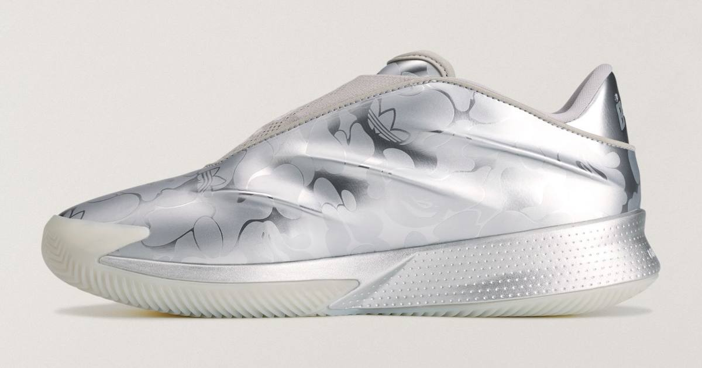

adidas x BAPE's Crazy Energy+ Leads Its Y2K Hoops Drop
BAPE and adidas drop their Y2K hoops collection today — the Crazy Energy+ in metallic silver camo leads, fronted by Jalen Williams, with purple camo apparel and a second shoe in tow.

Disclosure: this post contains affiliate links. I earn a commission on qualifying purchases.
BAPE and adidas are back together, and this time they've swapped the football pitch for the hardwood. Their new collection — a late-'90s and early-2000s basketball-inspired range fronted by Oklahoma City Thunder star Jalen Williams — drops today, November 7, and the shoe leading it is the adidas Crazy Energy+ in metallic silver camo.
The shoe
The Crazy Energy+ is one of adidas Basketball's newest performance models, and BAPE's version covers its sculpted upper in an all-over metallic print the brand calls COLOR CAMO SILVER — a tonal abstract ape camo with ape faces and Trefoils faintly visible in the pattern. A knitted "WGM" overlay sits where the laces would normally dominate, a nod to World Gone Mad, BAPE's long-running slogan, and the pair ships with two interchangeable lace options. Underneath the camo it's still a real hoops shoe, with Lightstrike Pro cushioning and a moulded base.
The details, as listed by release trackers:
Model: BAPE x adidas Crazy Energy+
Colorway: Silver Metallic / Silver Metallic / Silver Metallic
Style code: KH8660
Release date: November 7, 2026
Price: $200 (listed by most trackers; see note below)
One honest flag on price: most release trackers list the Crazy Energy+ at $200, but at least one outlet has it at $150. Check the CONFIRMED app on drop day before you commit.
The rest of the collection
The apparel leans on COLOR CAMO PURPLE — the purple camo print fans link to BAPE's early-2000s peak — led by a reversible mesh shark hoodie. The range also includes a statement chenille varsity jacket in black with leather sleeves, adidas Originals and BAPE ape-head patches, and big chenille "A" and "B" letters across the chest.
There's a second shoe in the drop, too: the adidas Adizero Goukana (KH8096), confirmed to also release November 7 via BAPE's retail channels, in bright pink, purple, and red tones with a large white STA motif.
When and where
The full footwear and apparel range releases today, November 7, via the adidas CONFIRMED app, select retailers, BAPE STORE locations, and BAPE.COM.
Why this one matters
The interesting call here is the silhouette itself. adidas and BAPE could have reached into the archive for this one — a Forum or a Superstar in camo would have been the safe play. Instead they put BAPE's treatment on a current performance basketball shoe, one that only launched earlier this year. The base Crazy Energy debuted in July 2026 at $110 in the Color Shift and Ice White colorways, built on full-length Lightstrike cushioning, and it's been worn on court this season by members of the adidas family — including Jalen Williams, who fronts this campaign. We first got a look at the silhouette when Steph Curry debuted it on court during his sneaker free agency season last year.
The timing fits the era the collection is chasing. The late '90s and early 2000s were when basketball style carried as much weight off the court as on it — baggy mesh, loud camo, varsity jackets — and BAPE was right in the middle of it. This drop is that whole wardrobe at once: silver camo on court, purple camo off it. It's also the latest in a busy year between the two brands, following their earlier 2026 project tied to last summer's global football tournament.
Watch
Source: Bape x adidas Crazy Energy Metallic Silver (Ragno Updates) — a release-date breakdown of the BAPE x adidas Crazy Energy+ (KH8660) in Metallic Silver, with the November 7 date and both SKUs.
Sources
• BAPE and adidas Enlist Jalen Williams for Y2K Hoops Collection Headlined by the Crazy Energy+ (Hypebeast, November 3, 2026)
• Jalen Williams Fronts BAPE x adidas Collection Featuring Crazy Energy+ (Modern Notoriety)
• BAPE x adidas Crazy Energy+: Closer Look and Release Date (The Drop Date)
• BAPE and adidas Bring Silver Camo to New Crazy Energy+ Collab (Sole Retriever)
• adidas Basketball Introduces Crazy Energy (adidas News, July 14, 2026)
• Best Drops: November Week 1 (Hypebeast)